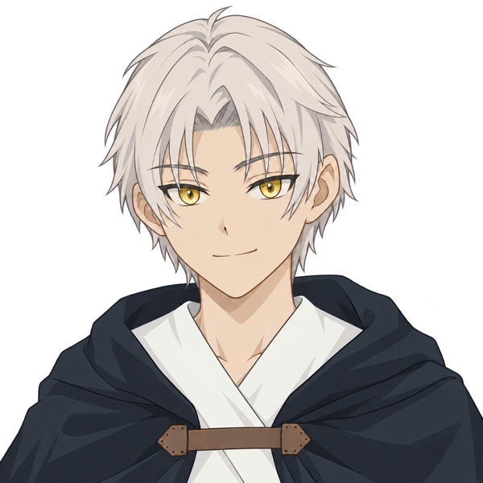

主人公
ゲーム開始時に、どちらか一人を選んで旅立ちます。
生前の記憶も自分の名前さえも失ったまま、死後の国で目覚めた存在。出会ったパートナーから名前を授かり、胸の奥にだけ残る「誰かに会いたい」という想いに導かれて、「輪廻の鏡のかけら」を集める旅に出ます。

ミズキ
MIZUKI「——知りたい。自分のこと。
それなら、知りに行くしかない」
柔らかな物腰の奥に、まっすぐな芯を秘めた少女。頭で考えるより先に相手の痛みへ共感が動く感覚派で、危うい場面でも直感を信じて一歩を踏み出す。ときに綺麗事だと分かっていても、誰かのためにリスクを背負うことを厭わない。
水と闇の魔法 ／ 攻撃寄りの万能型

ナギ
NAGI「——それなら、賭けてみよう。
僕の役割、ってやつに」
穏やかで丁寧な口調で話す、思慮深い少年。納得してから動く理屈屋で、自分の気持ちには少し鈍感なところがある。それでも、大切なことは自分の言葉で確かめようとし、一度決めたことには静かな強さを貫く。
水と光の魔法 ／ 魔力寄りの万能型
パートナー
選んだ主人公によって、ともに暮らす相手が変わります。
町で薬屋を営んでおり、死後の国で目覚めたばかりの主人公に名前を与え、自宅へ迎え入れてくれる人物。危険な「鏡のかけら」集めには反対しながらも、主人公がいつでも戻れる場所を守り、旅に同行するときは手当てや応援でパーティを支えます。

ルイ
RUI「あんたのやりたいようにやりな。
私はあんたが休める場所を守っててやるから」
ミズキ編のパートナー。少年のようにざっくばらんな口調で話す少女。怒る・拗ねる・照れると感情がそのまま表に出るタイプで、危なっかしいミズキによく声を荒らげては、最後には根負けして背中を押してくれる。
薬屋の店主 ／ ミズキとの物語

カイリ
KAIRI「……なんで、お前がそんな危険な役を
買って出る必要があるんだよ」
ナギ編のパートナー。ぶっきらぼうな口ぶりの奥に深い情を秘めた少年。普段は感情を表に出すのを抑えているが、ナギのことになると心配が先に立って口うるさくなり、ふとした瞬間に年相応の無防備さを見せる。
薬屋の店主 ／ ナギとの物語
旅の仲間

ペチ
PECHI「お手並み拝見にゃ」
「ゆらぎの森」の泉のほとりで昼寝していた、喋る黒猫。強いやつは怖いが、なでなでの上手いやつは大好き。撫での腕前を豊かすぎる語彙で審査し、合格した者にはついていく。戦いでは素早さと、敵のお宝を失敬する「ねこばば」が武器。いざというときは——"豹変"するらしい。
獣 ／ 敏捷のトリックスター

カグヤ
KAGUYA「ねえ、あなた。
私と、遊んでみる？」
「紅蓮の洞窟」の最奥、マグマの中からゆらりと現れる炎の悪魔。知的で妖艶、人間を寄せつけない。力を示した主人公を「観察対象」として気に入り、同行してくれる。強力な炎魔法と、毒や眠りなど多彩な状態異常で敵を翻弄する魔法特化型。
悪魔 ／ 炎と状態異常の使い手

ハヤテ
HAYATE「答えろ。お前は、それを
何のために集めている？」
「風哭きの塔」の頂で、吹き荒れる風の中に一人佇む精霊。言葉少なだが思慮深く、旅の目的を鋭く問うてくる。その問いに心で答えた者にだけ、癒しの力を貸す。風の回復魔法と全体への支援に長けた、パーティの守り手。
精霊 ／ 回復と支援の要